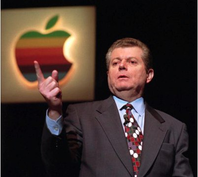
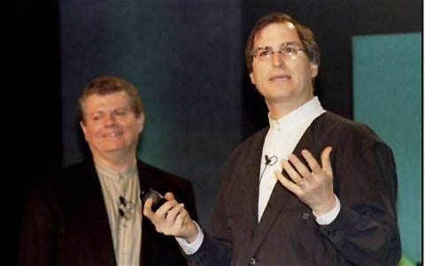
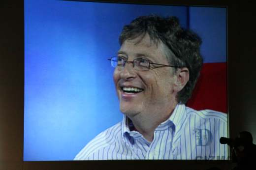

Chương 23

iếm khi bạn thấy một nghệ sĩ ở tuổi 30 hay 40 có thể thực sự đóng góp một điều gì đó phi thường,” Jobs đã bày tỏ điều đó khi chuẩn bị bước qua tuổi 30.
Điều đó đúng với Jobs ở độ tuổi 30, trong thập niên tính từ khi ông rời khỏi Apple năm 1985. Nhưng khi bước sang tuổi 40, năm 1995, ông đã có bước nhảy vọt. Toy story được phát hành trong năm đó, và năm sau nữa Apple mua lại NeXT đồng thời đề nghị ông quay trở lại công ty do chính mình sáng lập. Khi quay trở lại Apple, Jobs đã chứng minh rằng ngay cả những người qua tuổi 40 vẫn có thể là những nhà sáng chế tuyệt vời. Từng thay đổi những chiếc máy tính cá nhân ở độ tuổi 20, giờ đây ông tiếp tục làm điều tương tự cho máy nghe nhạc, mô hình kinh doanh của ngành công nghiệp thu âm, điện thoại di động, ứng dụng, máy tính bảng, sách, và ngành báo chí.
Jobs từng nói với Larry Ellison rằng chiến lược để quay lại của mình là bán NeXT cho Apple, được bổ nhiệm vào hội đồng quản trị, và ở đó sẵn sàng khi CEO Gil Amelio gặp thất bại.
Ellison có thể cảm thấy bối rối khi Jobs khăng khăng việc ông không có động lực về tiền bạc, nhưng điều đó có phần đúng. Ông không có nhu cầu thôn tính rõ ràng như của Ellison hay mong muốn từ thiện của Gates và cũng không có ham muốn xem mình có thể leo cao cỡ nào trên danh sách của Forbes. Thay vào đó, cái tôi và những nhu cầu cá nhân của ông hướng tới sự thỏa mãn khi tạo ra những thành tựu khiến người ta phải tôn thờ. Thực tế đó là một di sản kép: xây dựng những sản phẩm sáng tạo và phát triển một công ty trường tòn. Ông muốn được đặt trong ngôi đền với những tượng đài như Edwin Land, Bill Hewlett và David Packard. Và cách tốt nhất để đạt được những điều đó là trở lại Apple và giành lại vương quốc của mình.
Và khi chiếc ly quyền lực đã ở rất gần đôi môi của mình, ông lại trở nên do dự, miễn cưỡng một cách kỳ lạ, có thể hơi bẽn lẽn.
Ông chính thức quay trở lại Apple vào tháng 1 năm 1997 với vị trí cố vấn bán thời gian, như lời ông đã nói với Amelio. ông bắt đầu khẳng định bản thân ở một số lĩnh vực nhân sự, đặc biệt trong việc bảo vệ các nhân viên của ông đã chuyển từ NeXT qua. Tuy nhiên trong phần lớn các công việc khác ông lại trầm lặng một cách khác thường. Quyết định không mời Jobs vào ban quản trị đã làm ông thất vọng, ông cảm thấy không được tôn trọng khi bị đề nghị vận hành bộ phận phát triển hệ điều hành của công ty. Amelio đã tạo nên một tình thế mà Jobs vừa ở trong lều, vừa ở ngoài lều, và đó không phải một quyết định tạo nên sự yên bình. Jobs sau này nhớ lại: Gil không muốn sự có mặt của tôi. Và tôi đã nghĩ hắn là một gã chẳng ra gì. Tôi đã biết điều đó trước cả khi bán công ty cho hắn ta. Tôi nghĩ mình sẽ chỉ được trưng ra ở những sự kiện như MacWorld, chủ yếu là để phô diễn. Điều đó vẫn ổn, bởi tôi vẫn đang làm việc ở Pixar. Tôi đã thuê một văn phòng ở khu thương mại Palo Alto để làm việc một vài ngày trong tuần, và tôi tới Pixar một hoặc hai ngày. Đó là một cuộc sống dễ chịu. Tôi có thể sống chậm lại, dành thời gian nhiều hơn cho gia đình.
Thực tế là Jobs đã được xuất hiện ở Macworld ngay đầu tháng Một, và nó chứng minh một lần nữa nhận xét của ông về Amelio. Gần 4.000 ghế được giành giật trong khán phòng ở San Francisco Marriott để nghe bài phát biểu của Amelio. ông ta được giới thiệu bởi nghệ sĩ Jeff Goldblum. “Tôi đóng vai một chuyên gia về học thuyết hỗn loạn trong Công viên kỷ Jura,” Jeff nói. “Tôi thấy điều đó giúp mình đủ tư cách phát biểu ở một sự kiện của Apple.” Sau đó ông nhường lời cho Amelio, tiến lên sân khấu với một chiếc áo khoác thể thao bóng bẩy và một chiếc áo sơ mi kẻ sọc, cài khuya sát cổ, “nhìn giống như một anh hề ở Vegas,” Jim Carlton, phóng viên tờ Wall Street Journal ghi chú, hay theo mô tả của tay viết về công nghệ Michael Malone, “nhìn giống y như ông chú mới ly dị của bạn trong ngày hẹn hò đầu tiên của mình.” Một vấn đề lớn hơn nữa là Amelio sau một kỳ nghỉ đã vướng vào một cuộc ẩu đả tòi tệ với người viết bài diễn thuyết của mình, và từ chối nhắc lại điều đó. Khi Jobs tới hậu trường, ông cực kỳ thất vọng với sự hỗn loạn đang diễn ra, và ông thực sự tức giận khi thấy Amelio đứng trên bục vụng về trình bày một bài diễn thuyết rời rạc và lê thê. Ông ta không quen thuộc với những ý chính hiện trên máy bắn chữ và nhanh chóng cố gắng đẩy nhanh bài diễn thuyết. Ông ta cũng thường xuyên mất mạch tư duy. Sau khoảng hơn một giờ, người nghe trở nên chán nản. Có một vài thời điểm ngắt quãng như khi ông ta giới thiệu ca sỹ Peter Gabriel lên trình diễn về chương trình âm nhạc mới. ông ta cũng quên giới thiệu Muhammad Ali ở hàng ghế đầu tiên; nhà vô địch vốn tới để lên sân khấu quảng bá cho trang web về căn bệnh Parkinson, tuy nhiên Amelio đã không bao giờ mời ông lên hay giải thích vì sao ông lại có mặt ở đây.

CEO: Amelio
Amelio giằng dai hơn 2 giờ đồng hồ trước khi mời lên sân khấu người được tất cả chờ đợi để chúc mừng. “Jobs, thừa tự tin, phong cách, với sức hút tuyệt đối, hoàn toàn đối lập với một Amelio vụng về khi ông bước trên sân khấu,” Carton viết. “Sự trở lại của Elvis cũng không thể tạo nên một cảm xúc lớn hơn thế.” Đám đông nhảy lên trên đôi chân của họ và tung hô ông hơn một phút liền. Một thập kỉ tiêu điều đã qua. Cuối cùng Jobs vẫy tay ra hiệu cho đám đông yên lặng và đối đầu trực diện với thách thức. “Chúng ta phải lấy lại hào quang đã mất,” ông nói. “Máy Mac đã không cải tiến nhiều trong 10 năm qua và bị Windows đuổi kịp. Vì vậy chúng ta cần phát triển một hệ điều hành tốt hơn nữa.”
Những lời đầy sức sống của Jobs đã có thể là sự đền bù cuối cùng cho màn trình diễn tệ hại của Amelio. Thật không may, Amelio đã quay trở lại sân khấu và tiếp tục chuyến du ngoạn của mình thêm một giờ nữa. Cuối cùng sau hơn 3 giờ kể từ lúc bắt đầu, Amelio kết thúc sự kiện bằng việc gọi Jobs lên sân khấu cùng sự xuất hiện bất ngờ của Steve Wozniak. Một lần nữa mọi việc lại trở nên hỗn loạn. Tuy nhiên Jobs tỏ ra khó chịu một cách rõ ràng, ông từ chối tham gia diễn hình ảnh bộ ba hạnh phúc, tay giơ cao lên trời. Thay vào đó ông chậm rãi rời khỏi sân khấu, “ông ta nhẫn tâm phá hỏng giây phút mà tôi đã lên kế hoạch từ trước,” Amelio phàn nàn sau đó. “Cảm xúc cá nhân của ông ta còn quan trọng hơn hình ảnh của Apple trước báo giới.” Mới chỉ có 7 ngày đầu năm mới cho Apple, nhưng đã khã rõ rằng nó sẽ không bình yên được tới giữa năm.
Jobs ngay lập tức đẩy những người ông tin tưởng vào những vị trí cấp cao ở Apple. “Tôi cần đảm bảo chắc chắn rằng những người thực sự giỏi đến từ NeXT không bị đâm sau lưng bởi những kẻ kém hơn đang giữ những vị trí cốt cẤn ở Apple,” Jobs hồi tưởng. Ellen Hancock, người muốn chọn hệ điều hành Solaris của Sun thay vì NeXT, đứng đầu danh sách này, đặc biệt khi bà tiếp tục muốn sử dụng phần lõi của Solaris trong hệ điều hành mới của Apple. Trong phần trả lời câu hỏi của một phóng viên về vai trò của Jobs trong việc ra quyết định này, bà trả lời cộc lốc, “Không gì cả.” Tuy nhiên bà ta đã sai. Việc đầu tiên Jobs làm là đảm bảo 2 người bạn của ông ở NeXT nắm lấy vị trí của bà này. Để điều hành mảng phần mềm, ông sử dụng người bạn Avie Tevanian của mình. Để nắm mảng phần cứng, ông đã gọi cho Jon Rubinstein, người đã nắm vị trí tương tự ở bộ phận phần cứng của NeXT. Rubinstein đang đi nghỉ ở một hòn đảo nhỏ tại Skye khi Jobs gọi. “Apple cần giúp đỡ,” ông nói. “Anh có muốn lên tàu không?” Rubinstein đã đồng ý. ông trở về đúng thời điểm để tham dự MacWorld và nhìn thấy quả bom Amelio trên sân khấu. Mọi việc tệ hơn ông tưởng, ông và Tevanian thường trao đổi ánh mắt trong các cuộc họp giống như họ đang phải ở trong một nhà thương điên kinh khủng, với những người đưa ra các phát biểu một cách ngây thơ trong khi Amelio ngồi ở cuối bàn với khuôn mặt ngơ ngác.
Jobs không thường tới văn phòng, tuy nhiên ông thường xuyên nói chuyện qua điện thoại với Amelio. Khi đã thành công trong việc đưa Tevanian, Rubinstein và những người ông tin tưởng khác vào các vị trí cao cấp nhất, ông chuyển sang tập trung vào danh mục các sản phẩm đang rất lộn xộn. Một trong những sản phẩm bị ông hạ thấp là Newton, thiết bị cầm tay cá nhân được quảng bá với khả năng nhận diện chữ viết tay. Nó không thực sự tệ như những lời nói đùa hay như trong tranh biếm họa của Doonesbury, nhưng Jobs ghét nó. ông khinh thường ý tưởng cần một chiếc bút để viết lên màn hình. “Chúa cho chúng ta 10 cây bút,” ông nói trong khi vẫy những ngón tay của mình. “Đừng phát minh ra một cái mới.” Thêm nữa, Jobs xem Newton là một sáng tạo lớn của John Sculley, dự án con cưng của ông ta. Chỉ riêng điều đó đã hủy diệt nó trong mắt của Jobs.
“Ông bắt buộc phải ngừng Newton,” một ngày Jobs nói với Amelio qua điện thoại.
Đó là một đề nghị từ trên trời rơi xuống, và Amelio đã đáp trả. “Ý ông là gì, hủy nó đi ư?” ông ta nói. “Steve, ông có biết nó sẽ tốn kém thế nào không hả?”
“Dừng nó lại, viết một thông báo, và giải thoát mình khỏi nó,” Jobs nói. “Không quan trọng là nó tốn bao nhiêu. Mọi người sẽ chúc mừng ông nếu ông thoát khỏi nó.”
“Tôi đã xem xét Newton và nó sẽ là một cái máy hái ra tiền,” Amelio phân trần. “Tôi không ủng hộ việc ngừng nó lại.” Mặc dù vậy, vào tháng 5 ông ta thông báo đóng cửa bộ phận Newton.
Bắt đầu giai đoạn kết thúc kéo dài hàng năm trời của nó.
Tevanian và Rubinstein thường tới nhà của Jobs để cập nhật thông tin cho ông. Và ngay lập tức Sillicon Valley biết tới việc Jobs đang lặng lẽ giành lấy quyền lực từ Amelio. Nó không giống như cuộc chơi quyền lực của Machiavellian mà đơn giản Jobs chỉ là Jobs. Ham muốn kiểm soát đã thấm sâu vào bản chất của ông. Louise Kehoe, phóng viên tờ Financial Times là người đầu tiên dự đoán điều này khi cô đặt câu hỏi cho Jobs và Amelio ở thông báo tháng 12, với câu chuyện. “Ngài Jobs đã trở thành thế lực ở phía sau ngai vàng,” cô viết trong một bản tin cuối tháng 2. “ông ấy được cho rằng đang ra những quyết định khiến một số bộ phận của Apple bị loại bỏ. Ngài Jobs đã thuyết phục một số cựu đồng nghiệp ở Apple quay trở lại công ty, là dấu hiệu mạnh mẽ cho thấy ông đang lên kế hoạch để nắm quyền. Theo một trong những người thân cận với Jobs, ông ấy cho rằng Amelio và những người được ông ta bổ nhiệm đã không thành công trong việc khôi phục Apple, và ông dự định sẽ thay thế họ để đảm bảo cho sự sống còn cho công ty „của ông ấy.
Trong tháng đó, Amelio phải đối diện với cuộc họp cổ đông thường niên và giải thích vì sao kết quả quý IV năm 1996 thấp hơn 30% doanh số so với cùng kỳ năm trước. Các cổ đông cực kỳ giận dữ. Amelio thiếu khả năng và đã điều hành cuộc họp một cách yếu đuối. “Bài phát biểu đó là một trong những bài tốt nhất tôi từng làm,” ông ta viết sau đó. Tuy nhiên Ed Woolard, cựu CEO
của DuPont và giờ là chủ tịch của Apple (Markkula bị đẩy xuống làm phó chủ tịch), đã vô cùng hãi hùng. “Đây là một thảm họa,” vợ ông ấy thì thầm vào giữa buổi họp. Woolard đồng tình với điều này. “Gil ăn mặc rất tuyệt, nhưng vẻ ngoài và giọng của ông ta quá yếu đuối,” ông nhớ lại. “ông ta không trả lời được các câu hỏi, không biết là mình đang nói về cái gì, và cũng không cho thấy chút tự tin nào.”
Woolard nhấc điện thoại và gọi cho Jobs, người ông chưa từng gặp. Cái cớ ban đầu là mời Jobs tới Delaware để gặp các nhà điều hành của DuPont. Jobs đã từ chối, nhưng như Woolard hồi tưởng “yêu cầu đó chỉ là mẹo để nói chuyện với cậu ấy về Gil.” ông lái cuộc nói chuyện qua hướng này và hỏi thẳng Jobs việc ông nghĩ thế nào về Amelio. Woolard nhớ rằng Jobs đã khá thận trọng, nói rằng Amelio không ở vị trí phù hợp. Jobs thì hồi tưởng rõ hơn: Tôi đã nghĩ rằng, hoặc tôi nói thẳng với ông ta sự thật rằng Gil chỉ là một gã không ra gì, hoặc nói tránh điều đó. ông ta ở trong ban quản trị của Apple, tôi có trách nhiệm phải nói thật điều mình nghĩ; nhưng mặt khác, nếu tôi nói, ông ta sẽ nói với Gil, và trong trường hợp này Gil sẽ không bao giờ nghe lời tôi nữa, và ông ta sẽ xử tất cả những người tôi mang tới Apple. Tất cả những sự cân nhắc diễn ra trong đầu tôi chừng ba mươi giây. Cuối cùng tôi đã quyết định rằng mình nợ người này sự thật. Tôi thật sự quan tâm tới Apple. Vì thế tôi cho ông ta biết điều đó. Tôi đã nói người đàn ông này là CEO tệ nhất mà tôi từng biết, và tôi nghĩ nếu cần có một chứng chỉ để làm CEO thì ông ta sẽ không bao giờ có nó. Khi tôi ngắt máy, tôi đã nghĩ, mình vừa làm một điều thật ngu ngốc.
Mùa xuân năm đó Larry Ellison thấy Amelio ở một buổi tiệc và giới thiệu ông ta với phóng viên công nghệ Gina Smith, người muốn biết về tình hình hiện tại của Apple. “Cô biết không, Gina, Apple giống như một con tàu,” Amelio trả lời. “Con tàu này chở đầy châu báu, nhưng có một lỗ hổng trên thân tàu. Và nhiệm vụ của tôi là giúp tất cả mọi người cùng hướng tới một mục tiêu.” Smith trông khá bối rối và hỏi, “Phải, nhưng còn lỗ hổng trên tàu thì sao?” Từ sau đó, Ellison và Jobs đùa về câu chuyện của chiếc tàu. “Khi Larry kể lại câu chuyện này cho tôi, chúng tôi đang ở trong cửa hàng sushi, tôi thực sự đã ngã khỏi ghế vì cười,” Jobs nhớ lại. “Anh ta giống như một thằng hề, và lại rất nghiêm túc với bản thân. Anh ta muốn mọi người gọi mình là tiến sĩ Amelio. Đó luôn luôn là một tín hiệu cảnh báo.”
Brent Schlender, phóng viên công nghệ đáng tin cậy của Fortune, biết Jobs và hiểu cách suy nghĩ của ông, vào tháng 3 anh ta đã viết một bài báo chi tiết về sự hỗn loạn này. “Apple, hình mẫu của Silicon Valley về cách quản lý khác thường và những giấc mơ kỹ thuật số còn đang chập chững, đã quay trở lại thời kỳ khủng hoảng, xáo trộn một cách đáng buồn và chậm rãi với sự tụt giảm doanh số, một chiến lược công nghệ sai lầm và một thương hiệu đang phai nhạt,” anh viết.
“Với con mắt Machiavellian, có vẻ như Jobs, bất chấp sự mời gọi của Hollywood - trước đây từng quản lý Pixar, nhà sản xuất của Toy story và một số phim hoạt hình khác - có thể sẽ tiếp quản Apple.”
Một lần nữa Ellison đưa ra công chúng ý tưởng thôn tính đối thủ và đưa “bạn thân” Jobs của mình lên làm CEO. “Steve là người duy nhất có thể giải cứu Apple,” ông nói với các phóng viên. “Tôi luôn sẵn sàng giúp đỡ ngay khi anh ấy nói.” Nhưng giống như lần thứ 3 cậu bé chăn cừu nói có sói, lần mong muốn thôn tính cuối cùng của Ellison không được chú ý nhiều, vì thế cuối tháng đó, ông nói với Dan Gillmore của tờ San Jose Mercury News rằng mình đang lập một nhóm các nhà đầu tư huy động 1 tỉ USD để mua phần lớn cổ phiếu của Apple. (Giá trị thị trường của công ty ở thời điểm đó khoảng 2,3 tỉ USD). Ngày câu chuyện này được đưa ra, cổ phiếu của Apple tăng 11% với số lượng giao dịch lớn. Để tăng thêm tính phù phiếm, Ellison lập địa chỉ email savapple@us.oracle.com, kêu gọi công chúng bình chọn xem ông ta có nên đi tiếp với chiến dịch này không.
Jobs khá thích thú với vai trò tự chỉ định của Ellison. “Thỉnh thoảng Larry khơi chuyện này ra,” ông nói với các phóng viên. “Tôi đã cố giải thích vai trò của mình ở Apple là một chuyên gia tư vấn.” Tuy nhiên Amelio thì giận điếng người, ông ta gọi cho Ellison để yêu cầu dừng chuyện này lại, nhưng Ellison chẳng buồn nhấc máy. Vì thế Amelio gọi cho Jobs, người có những phát biểu lập lờ nhưng cũng khá xác thực. “Tôi thực sự không hiểu điều gì đang diễn ra,” Jobs nói với Amelio. “Tôi nghĩ tất cả những điều này thật điên rồ.” Sau đó Jobs khẳng định một lần nữa, nhưng không phải tất cả sự thật: “Anh và tôi có một mối quan hệ tốt.” Jobs đã có thể kết thúc cuộc xét hỏi này bằng cách nói ra việc từ chối ý tưởng của Ellison, nhưng với sự phiền phức của Amelio, ông đã không làm thế. ông tiếp tục xa lánh, phục vụ cho ý thích và bản chất tự nhiên của mình.
Sau đó, báo giới quay sang chống lại Amelio. Business Week chạy một trang bìa với tiêu đề “Apple có phải một miếng bánh?”;
Red Herring chạy một tiêu đề “Gil Amelio, hãy từ chức”: và Wired chạy trang bìa với biểu tượng của Apple bị hành hạ bởi một chiếc vương miện gai và tiêu đề “Cầu nguyện.” Mike Barnicle của tờ Boston Globe, nhắc lại những năm bị quản lý sai lầm của Apple, đã viết “Làm thế nào mà những kẻ ngu ngốc này vẫn có thể nhận tiền hàng tháng trong khi chúng biến chiếc máy tính duy nhất không làm người ta hoảng sợ thành một thứ tương tự như khu tập ném của đội Red Sox?” Khi Jobs và Amelio ký hợp đồng vào tháng 2, Jobs bắt đầu hy vọng một cách lãng phí và tuyên bố, “Anh và tôi cần gặp nhau và uống vài ly để kỉ niệm!” Amelio hẹn sẽ mang rượu từ tầng hầm của mình và đề nghị mời thêm các bà vợ. Phải tới tháng 6 họ mới có thể chọn được một ngày, mặc dù sự căng thẳng ngày càng tăng nhưng họ vẫn có thể có một khoảng thời gian vui vẻ. Tuy vậy thức ăn và rượu hoàn toàn không phù hợp với nhau; Amelio mang tới một chai Cheval Blanc 1964 và một chai Montrachet giá 300 đô la mỗi chai; còn Jobs chọn một nhà hàng chay ở Redwood City với hóa đơn tiền ăn tổng cộng là 72 đô la. Vợ của Amelio sau đó nhớ lại, “Ông ấy rất cuốn hút, và cả vợ của ông ấy cũng vậy.”
Jobs có thể hấp dẫn và thu hút mọi người nếu muốn, và ông ấy thích làm điều đó. Những người như Amelio và Sculley cho phép họ tin rằng bởi vì Jobs cố thu hút họ có nghĩa rằng ông ấy thích và tôn trọng họ. Đó là ấn tượng đôi khi Jobs cố thúc đẩy bằng việc đưa ra những lời tâng bốc giả dối cho những ai cần nó. Jobs có thể thu hút những người mà ông ghét dễ dàng như việc lăng mạ những người mà ông thích. Amelio không nhìn thấy điều đó, bởi cũng như Sculley, quá háo hức với cảm giác yêu mến Jobs. Thực vậy, những từ ông ta dùng để mô tả sự mong mỏi một quan hệ tốt với Jobs gần giống như những lời của Sculley. “Khi tôi vật lộn với một vấn đề, tôi có thể vượt qua nó cùng với anh ta,” Amelio nhớ lại. “Chúng tôi đồng thuận 9 trên 10 trường hợp.” Một cách nào đó, ông ta cố tin rằng Jobs thực sự tôn trọng mình: “Tôi thích cách Steve suy nghĩ và tiếp cận vấn đề, và có cảm giác rằng chúng tôi đang xây dựng một mối quan hệ đáng tin cậy với nhau.” Amelio vỡ mộng chỉ vài ngày sau bữa tối của họ. Qua buổi đàm phán của họ, ông ta cố thuyết phục Jobs giữ cổ phiếu Apple trong ít nhất 6 tháng hoặc hơn. Khoảng thời gian 6 tháng này kết thúc vào tháng 6. Khi một gói 1,5 triệu cổ phiếu được bán ra, Amelio gọi cho Jobs. “Tôi đã nói với mọi người rằng số cổ phần đó không phải của anh,” ông ta nói. “Hãy nhớ là tôi và anh đã thống nhất việc anh sẽ không bán mà không thông báo trước với tôi.”
“Đúng thế,” Jobs trả lời. Amelio coi câu trả lời này đồng nghĩa với việc Jobs chưa bán số cổ phiểu của mình, và thông báo việc đó. Tuy nhiên kỳ báo cáo SEC tiếp theo đã cho thấy Jobs thực sự đã bán cổ phiếu của mình. “Chết tiệt, Steve, tôi đã hỏi thẳng về những cổ phiếu này và anh đã nói không phải mình bán.” Jobs nói với Amelio rằng mình đã bán trong một lúc “chán nản” về tương lai của Apple và đã không muốn thừa nhận bởi ông đã “hơi xấu hổ.” Khi tôi hỏi Jobs về điều đó nhiều năm sau, ông ấy trả lời đơn giản, “Tôi không cảm thấy cần phải nói với Gil.” Tại sao Jobs lại nói dối Amelio về việc bán cổ phần? Có một lý do đơn giản là: Jobs đôi khi lảng tránh sự thật. Helmut Sonnenfeldt từng nói với Henry Kissinger, “Anh ta nói dối không phải vì thích như vậy, anh ta nói dối bởi nó là bản chất tự nhiên của anh ta.” Đó là bản tính tự nhiên của Jobs trong việc làm người ta mê muội hoặc trở nên bí mật khi ông cảm thấy nó xác đáng. Tuy nhiên ông cũng đôi khi cho phép mình thật thà một cách tàn nhẫn ở một vài thời điểm, nói những sự thực mà phần lớn chúng ta né tránh hay giấu giếm. Cả sự giả bộ cũng như sự thẳng thắn đều đơn giản là những khía cạnh khác nhau ở quan điểm theo chủ nghĩa Nietzsche của Jobs mà những phép tắc thông thường không áp dụng được với ông.
Tẩu thoát, bị truy đuổi bởi một con gấu Jobs đã từ chối việc chấm dứt những ý định về việc thôn tính của Larry Ellison, và cũng đã bí mật bán cổ phiếu của mình trong khi nói dối về việc đó.
Vì thế cuối cùng Amelio cũng nhận thấy việc Jobs đang nhắm tới ông ta. “Cuối cùng tôi buộc phải chấp nhận sự thật là mình đã quá mong muốn tin rằng cậu ta ở trong nhóm của mình,” Amelio nhớ lại. “Steve đã lên kế hoạch để kiểm soát việc từ chức của tôi.” Jobs thực tế đã giả nhân giả nghĩa một cách vụng về với Amelio với mọi cơ hội có được.
Ông không thể tự giúp mình. Tuy nhiên có một yếu tố quan trọng hơn trong việc khiến ban quản trị chống lại Amelio. Fred Anderson, giám đốc tài chính, coi đó là trách nhiệm mà mình được ủy thác trong việc cập nhật cho Ed Woolard và ban quản trị về tình hình nguy cấp của Apple. “Fred là người đã nói với tôi về việc tiền mặt đang cạn dần, nhân viên dần nghỉ việc và rất nhiều vị trí chủ chốt cũng đang nghĩ tới việc đó,” Woolard nói. “Anh ta chỉ rõ việc con tàu sắp sửa mắc cạn, và bản thân Fred cũng đang nghĩ tới việc rời bỏ Apple.” Điều đó làm tăng thêm sự lo lắng vốn có của Woolard kể từ sau khi chứng kiến Amelio ở cuộc họp cổ đông.
Trong một buổi họp điều hành của ban quan trị vào tháng 6, với sự vắng mặt của Amelio, Woolard đã mô tả cho ban giám đốc cách ông tính toán cơ hội của họ. “Nếu chúng ta giữ Gil làm CEO, tôi nghĩ chỉ có 10% khả năng ta tránh được việc phá sản,” ông nói. “Nếu ta sa thải ông ta và mời Steve lên nắm quyền, chúng ta có 60% khả năng sống sót. Nếu ta sa thải Gil, không có Steve quay lại và phải tìm một CEO mới, thì khả năng đó là 40%.” Và ban quản trị đã cho ông quyền được mời Jobs quay trở lại.
Woolard và vợ bay tới London, nơi họ xem các trận đấu tennis tại Wimbledon, ông xem các trận đấu vào ban ngày và dành thời gian buổi tối ở trong phòng tại khách sạn Inn on the Park để gọi điện về Mỹ, nơi đang là ban ngày. Cuối thời gian nghỉ ở đây, hóa đơn điện thoại của ông lên tới 2.000 đô-la.
Đầu tiên, ông gọi cho Jobs. Ban giám đốc sẽ sa thải Amelio, ông nói, và họ muốn Jobs quay lại với vị trí CEO. Jobs đã từng hết lời chế nhạo Amelio và đưa ra ý tưởng của mình về việc quay lại điều hành Apple. Nhưng đột nhiên, khi nhận được lời mời, ông lại trở nên rụt rè. “Tôi sẽ giúp,” ông trả lời.
“Làm CEO?” Woolard hỏi.

Chủ tịch và Giám đốc điều hành Gil Amelio trên sân khấu với Steve Jobs tại Macworld Expo năm 1997
Jobs đã từ chối. Woolard đã rất cố gắng thúc đẩy để ít nhất Jobs cũng trở thành CEO tạm quyền. Nhưng Jobs vẫn từ chối. “Tôi sẽ làm một nhà tư vấn,” ông nói. “Không lấy thù lao.” Ông cũng đồng ý trở thành một thành viên trong ban quản trị. “Đó là tất cả những gì tôi có thể làm bây giờ,” ông nói. Sau một số lời đồn đại, ông đã gửi một thông báo cho toàn bộ nhân viên của Pixar đảm bảo về việc mình sẽ không rời bỏ họ. “Tôi có một cuộc gọi từ ban quản trị của Apple 3 tuần trước yêu cầu tôi quay lại Apple với vị trí CEO,” ông viết. “Tôi đã từ chối. Sau đó họ yêu cầu tôi trở thành chủ tịch của Apple, và tôi tiếp tục từ chối. Vì thế đừng lo lắng về những lời đồn đại ngu ngốc. Tôi không có ý định rời bỏ Pixar. Các bạn bị mắc kẹt với tôi.” Tại sao Jobs không nắm lấy cơ hội này? Tại sao ông không miễn cưỡng nắm lấy công việc mà suốt 2 thập kỷ ông có vẻ luôn khao khát? Khi tôi hỏi, Jobs đã nói: Pixar vừa được niêm yết trên sàn chứng khoán, và tôi hạnh phúc khi trở thành CEO tại đây.
Tôi chưa bao giờ biết bất kỳ ai đồng thời làm CEO ở 2 công ty cổ phần khác nhau, kể cả là tạm thời, và thậm chí tôi cũng không chắc điều đó có hợp pháp hay không. Tôi không biết mình muốn làm cái gì. Khi đó tôi đang thích thú khi dành được nhiều thời gian hơn với gia đình. Tôi bị giằng xé. Tôi biết Apple đang hỗn loạn, tôi đã tự hỏi: mình có muốn bỏ lại cuộc sống tốt đẹp đang có?
Tất cả các cổ đông của Pixar sẽ nghĩ gì? Tôi đã nói chuyện với những người mình tôn trọng. Cuối cùng tôi gọi cho Andy Grove vào khoảng 8h vào một buổi sáng thứ 7 - quá sớm. Tôi đưa ra những cân nhắc điểm lợi và hại, anh ấy ngắt lời tôi giữa chừng và nói, “Steve, tôi không có hứng thú gì với Apple.” Tôi đã rất choáng váng. Sau đó tôi nhận ra rằng mình quan tâm tới Apple - tôi đã sáng lập nó và đó là một thứ tốt đẹp hiện hữu trên thế giới này. Và đó là khi tôi quyết định tạm thời quay lại để giúp họ thuê được một CEO mới.
Giải thích về việc đang vui thú với khoảng thời gian nhiều hơn dành cho gia đình không thuyết phục mấy. Jobs chưa bao giờ giành được danh hiệu “ông bố của năm”, ngay cả khi ông có nhiều thời gian trong tay. ông có làm tốt hơn việc để mắt tới con cái, đặc biệt là Reed, tuy nhiêu ưu tiên hàng đầu vẫn là công việc, ông thường xuyên cách biệt với hai con gái nhỏ của mình, tiếp tục xa rời Lisa và thường xuyên là một người chồng cáu bẳn.
Vậy, lý do thực sự khi Jobs do dự trong việc nắm quyền ở Apple là gì? Với tất cả sự lì lợm và lòng tham vô độ trong việc kiểm soát mọi thứ, Jobs lưỡng lự và trầm lặng khi không chắc chắn về thứ gì đó. ông khao khát sự hoàn hảo, và không giỏi trong việc tìm cách giải quyết những thứ thiếu hoàn hảo. Jobs không muốn vật lộn với sự phức tạp hay thỏa hiệp. Điều đó đúng với các sản phẩm, thiết kế và nội thất trong nhà. Điều đó cũng đúng với những cam kết cá nhân. Nếu ông biết chắc chắn một hành động là đúng, thì không ai có thể ngăn ông lại được. Nhưng nếu không thấy chắc chắn, ông đôi khi rút lui và không muốn nghĩ tới những thứ không hoàn hảo với mình. Giống như khi Amelio hỏi vai trò mà Jobs muốn tham gia, Jobs chỉ im lặng và bỏ qua những tình huống làm ông không thoải mái.
Cách hành xử này xuất hiện một phần có nguồn gốc từ khuynh hướng nhìn thế giới theo 2 cực khác nhau của Jobs. Một con người hoặc là một anh hùng nếu không chỉ là một gã khờ, một sản phẩm phải là tuyệt vời còn không chỉ là thứ rác rưởi. Tuy nhiên ông cũng thường lúng túng với những thứ phức tạp hơn, mờ nhạt hơn, hay nhiều sắc thái: lập gia đình, mua một chiếc sofa phù hợp, cam kết điều hành một công ty. Thêm vào đó, ông không muốn sắp xếp để thất bại. “Tôi nghĩ Steve muốn biết Apple có thể cứu được hay không,” Fred Anderson nói.
Woolard và ban quản trị quyết định tiếp tục với kế hoạch và sa thải Amelio ngay cả khi Jobs chưa cam kết sẽ hỗ trợ tới mức nào trong vai trò cố vấn. Amelio đang đi nghỉ với vợ và các con, cháu của mình khi Woolard gọi điện từ London. “Chúng tôi cần anh thoái lui,” Woolard nói đơn giản. Amelio trả lời rằng giờ không phải thời điểm thích hợp để bàn chuyện này, nhưng Woolard cảm thấy mình cần tiếp tục. “Chúng tôi chuẩn bị thông báo việc thay thế anh.” Amelio phản đối. “Nhớ này, Ed, tôi đã nói với ban quan trị rằng cần tới 3 năm để công ty này có thể đứng trên đôi chân của mình,” ông nói. “Tôi thậm chí còn chưa đi hết nửa chặng đường.”
“Ban quản trị đang ở tình thế không muốn thảo luận thêm nữa,” Woolard trả lời. Amelio hỏi những người biết về quyết định này, và Woolard nói với ông ta sự thật: tất cả ban quản trị và Jobs. “Steve là một trong những người chúng tôi nói về chuyện này,” Woolard nói. “Cậu ấy nghĩ anh là người tốt, nhưng không hiểu biết nhiều về ngành công nghiệp máy tính.”
“Vì cái gì mà các ông lại lôi Steve vào một quyết định như thế này?” Amelio đáp trả một cách giận dữ. “Steve thậm chí còn không phải thành viên của ban quản trị, vậy anh ta làm cái quái gì trong tất cả những cuộc tranh luận này?” Dù vậy nhưng Woolard không lùi bước, Amelio cúp máy và tiếp tục kỳ nghỉ với gia đình trước khi thông báo cho vợ mình.
Ở một số thời điểm, Jobs thể hiện sự trộn lẫn lạ thường giữa tính cáu bẳn và sự thiếu thốn.
Ông thường không mảy may quan tâm tới người khác nghĩ gì về mình; ông có thể đoạn tuyệt với người khác và không bao giờ nhìn tới họ lần nữa. Một số thời điểm khác, ông lại cảm thấy sự ép buộc phải giải thích về mình. Vì thế buổi tối ngày hôm đó Amelio, hết sức ngạc nhiên, nhận được cuộc điện thoại từ Jobs. “Gil, tôi chỉ muốn anh biết, tôi đã nói chuyện với Ed hôm nay về chuyện này và tôi cảm thấy thực sự tồi tệ về nó,” ông nói. “Tôi muốn anh biết tôi không có liên quan gì tới chuỗi sự kiện này, đó là quyết định ban quản trị đã đưa ra, tuy nhiên họ có mời tôi với vai trò tư vấn.” Jobs nói với Amelio rằng mình tôn trọng ông vì là “người chính trực nhất mà tôi từng được gặp,” và theo đó là một số lời khuyên một cách tự nguyện. “Hãy nghỉ ngơi 6 tháng,” Jobs nói với ông ta. “Khi tôi bị ném khỏi Apple, tôi lập tức quay lại với công việc, và tôi lấy làm tiếc vì điều đó.” Jobs ngỏ lời sẽ là người lắng nghe bất cứ khi nào Amelio cần thêm lời khuyên.
Amelio hết sức bất ngờ nhưng vẫn kịp thì thầm vài lời cảm ơn. ông ta quay sang vợ và nhắc lại những lời của Jobs. “Theo nhiều cách, anh vẫn thích người này, nhưng anh không tin cậu ta,” Amelio nói với vợ.
“Em hoàn toàn bị dẫn dắt bởi Steve,” bà nói, “và em thực sự cảm thấy mình ngu ngốc.”
“Gia nhập đám đông thôi,” Amelio trả lời
Steve Wozniak, giờ là một cố vấn không chính thức cho công ty, rất xúc động về việc Jobs sắp quay trở lại. (ông ta đã bỏ qua một cách dễ dàng.) “Đó là tất cả những gì chúng ta cần,” ông nói, “bởi vì dù anh nghĩ thế nào về Steve, cậu ta chắc chắn là người biết cách làm những điều phi thường.” Và chiến thắng của Jobs trước Amelio cũng không làm ông ngạc nhiên, ông đã nói với tạp chí Wired ngay sau khi mọi việc diễn ra, “Gil Amelio gặp Steve Jobs, trò chơi kết thúc.” Thứ 2 sau đó những nhân viên chủ chốt của Apple được gọi tới khán phòng. Amelio bước vào với vẻ điềm tĩnh và khá thư giãn. “Tôi rất buồn khi phải thông báo đã đến lúc tôi cần phải ra đi,” ông nói. Fred Anderson, người được ủng hộ để trở thành CEO lâm thời, nói kế tiếp, và ông đã khẳng định rõ vai trò này sẽ được chuyển giao cho Jobs. Đúng 12 năm kể từ khi đánh mất quyền lực, sau những ngày tranh đấu, cuối tuần thứ tư của tháng 7 Jobs đã quay trở lại khán đài ở Apple.
Mọi thứ lập tức trở nên rõ ràng, bất kể việc Jobs có thừa nhận trước công chúng (hay với chính bản thân) hay không, ông bắt đầu việc kiểm soát Apple chứ không chỉ là một cố vấn bình thường. Ngay khi bước lên sân khấu ngày hôm đó - mặc quần soóc, giày đế mềm và áo cao cổ màu đen - ông bắt đầu công việc phục hồi đứa con tinh thần của mình. “Được rồi, hãy nói cho tôi biết có gì không ổn ở đây,” ông nói. Có vài tiếng xì xầm, tuy nhiên Jobs cắt ngang. “Đó là các sản phẩm!” ông trả lời. “Thế thì có gì không ổn với các sản phẩm?” Lại một vài người muốn thử trả lời, cho tới khi Jobs lại ngắt ngang và đưa ra câu trả lời chính xác. “Những sản phẩm hiện nay dở tệ!” ông nói.
“Chúng giờ chẳng còn có giới tính nữa!”
Woolard đã có thể thuyết phục Jobs chấp nhận vai trò cố vấn một cách tích cực. Jobs đã đồng ý thỏa thuận trong đó ông “đồng ý tham gia vào Apple tối đa 90 ngày, giúp họ cho tới khi tìm ra một CEO mới.” Công thức thông minh mà Woolard sử dụng trong thỏa thuận này là Jobs sẽ quay trở lại với tư cách là “một cố vấn dẫn dắt cả công ty.” Jobs sử dụng một văn phòng nhỏ ở cạnh phòng của ban quản trị trên tầng điều hành, rõ ràng là tránh văn phòng rộng rãi của Amelio. Ông tham gia vào tất cả các lĩnh vực của công ty: thiết kế sản phẩm, cắt giảm chi tiêu, đàm phán với nhà cung cấp và xem xét các đại lý quảng cáo. ông tin rằng mình cần phải ngăn làn sóng thôi việc của các thành viên chủ chốt, và để làm được điều đó ông muốn định giá lại quyền mua cổ phiếu của họ. Cổ phiếu của Apple đã xuống thấp tới mức quyền mua cổ phiếu trở nên vô giá trị. Jobs muốn hạ giá mua cổ phiếu ưu đãi để chúng lại có giá trị. ở thời điểm đó, việc này là hợp pháp, tuy nhiên nó không được đánh giá là tốt cho công ty. Vào ngày thứ 5 đầu tiên từ khi quay lại Apple, Jobs đã triệu tập một cuộc họp qua điện thoại với ban quản trị và làm rõ vấn đề đó. Tuy nhiên các giám đốc lại ngần ngại. Họ yêu cầu thời gian để nghiên cứu luật và tài chính để xem thay đổi này có những ảnh hưởng gì. “Nó cần được làm gấp,” Jobs nói với họ. “Chúng ta đang mất những người giỏi.”
Ngay cả người luôn hỗ trợ ông là Ed Woolard, trưởng ban khen thưởng, cũng phản đối: “ở DuPont chúng tôi chưa bao giờ làm như vậy,” ông nói.
“Các ông đưa tôi đến để ổn định chỗ này, và con người là chìa khóa của nó,” Jobs tranh luận. Khi ban quản trị đề nghị một nghiên cứu có thể mất tới 2 tháng, Jobs đã nổi giận: “Các người có điên không?!?” ông im lặng một lúc lâu, sau đó tiếp tục. “Này, nếu các anh không muốn thực hiện việc đó, tôi sẽ không quay lại vào thứ 2 tới. Bởi tôi có hàng ngàn quyết định then chốt cần thực hiện còn khó hơn thế này rất nhiều, và nếu các anh không thể hỗ trợ cho tôi trong những quyết định như thế này, tôi sẽ thất bại. Thế nên, nếu các anh không thể làm được, thì tôi sẽ ra khỏi đây, và các anh có thể trách cứ tôi, các anh có thể nói „Steve không phù hợp cho việc này.‟” Ngày hôm sau, sau khi hỏi ý kiến ban quản trị, Woolard gọi Jobs quay lại. “Chúng tôi sẽ chấp nhận việc này,” ông nói. “Nhưng một vài người trong ban quản trị không thích nó. Chúng tôi cảm thấy như anh đang chĩa súng vào đầu mình vậy.” cổ phiếu cho nhóm nhân viên chủ chốt (Jobs không được gì cả) được đưa về mức 13,25 đô la, bằng mức giá cổ phiếu vào ngày Amelio bị sa thải.
Thay vì tuyên bố chiến thắng và cảm ơn ban quản trị, Jobs tiếp tục sôi lên khi phải trả lời trước ban quản trị mà ông không tôn trọng. “Hãy dừng đoàn tàu lại, nó sẽ không có kết quả,” ông nói với Woolard. “Công ty này đang phải vật lộn để tồn tại, và tôi không có thời gian để làm vú nuôi cho ban quản trị. Vì vậy tôi cần tất cả các ông rút lui. Hoặc tôi sẽ rút lui và không quay trở lại vào thứ 2.”
Người duy nhất có thể ở lại, ông nói, là Woolard.
Phần lớn các thành viên của ban quản trị hết sức kinh ngạc. Jobs dù vẫn từ chối cam kết làm việc toàn thời gian hay đảm nhiệm vị trí nào khác ngoài vai trò cố vấn, nhưng ông đã cảm thấy mình có quyền lực để buộc họ phải rút lui. Tuy nhiên sự thật phũ phàng là ông thực sự có quyền năng đó đối với họ. Họ không đủ khả năng để ngừng cơn thịnh nộ của Jobs, hoặc là triển vọng của việc chỉ còn một thành viên trong ban quản trị rất thú vị khi đó. “Sau tất cả những gì họ đã trải qua, phần lớn đều vui mừng khi được buông tha,” Woolard nhớ lại.
Một lần nữa ban quản trị lại đồng ý. Họ chỉ có một yêu cầu: liệu Jobs có chấp nhận thêm một người nữa ở lại ngoài Woolard không? Điều đó giúp cải thiện về mặt hình ảnh. Jobs chấp nhận. “Họ là một ban quản trị yếu kém, một hội đồng tồi tệ,” ông nhớ lại. “Tôi đã đồng ý việc giữ lại Ed Woolard và một người tên Gareth Chang, người trở thành số không, ông ta không tệ, chỉ đơn giản là một số không tròn trĩnh. Woolard, mặt khác, lại là một trong những thành viên hội đồng tốt nhất mà tôi từng biết, ông ấy như một chàng hoàng tử, một trong những người thông minh và hỗ trợ nhất tôi từng gặp”
Trong những người bị yêu cầu từ chức có Mike Markkula, nhà đầu tư trẻ đã tới thăm gara của Jobs vào năm 1976, vô cùng ấn tượng với chiếc máy tính mới ra đời trên bàn làm việc, và đã đảm bảo 250.000 đô-la đầu tư, trở thành thành viên thứ 3, sở hữu Vs công ty mới thành lập. Qua 2 thập kỷ sau đó, ông là thành viên thường trực của ban quản trị, đã chứng kiến việc đến và đi của nhiều kiểu CEO. Ông đã ủng hộ Jobs ở nhiều thời điểm nhưng cũng có những va chạm, đánh kể nhất là khi ông đứng về phía Sculley trong cuộc đối đầu năm 1985. Khi Jobs quay trở lại, ông đã biết đó là thời điểm để mình ra đi.
Jobs có thể rất cay độc và lạnh lùng, đặc biệt với những người có xung đột với ông, nhưng cũng có thể rất tình cảm với nhưng người đã đồng hành cùng ông từ những ngày đầu. Wozniak tất nhiên thuộc vào nhóm được yêu thích này, nhưng dù vậy họ vẫn xa cách; tương tự với Andy Hertzfeld và vài người khác ở nhóm Macintosh. Cuối cùng, Mike Markkula cũng vậy. “Tôi cảm thấy mình bị phản bội một cách sâu sắc, nhưng ông ấy giống như một người cha và tôi luôn luôn quan tâm tới ông,” sau này Jobs hồi tưởng lại. Thế nên khi đến lúc phải yêu cầu ông rời khỏi ban quản trị Apple, Jobs đã lái xe tới ngôi biệt thự giống như một lâu đài của Markkula ở đồi Woodside và làm việc đó một cách riêng tư. Như mọi khi, ông yêu cầu một cuộc đi dạo, họ tản bộ về phía rừng tùng bách với một chiếc bàn pích ních. “Cậu ta nói rằng mình muốn có một ban quản trị mới bởi Jobs muốn một bắt đầu hoàn toàn mới,” Markkula nói. “Cậu ta lo lắng việc tôi sẽ khó khăn khi đón nhận nó, và đã an tâm khi thấy tôi hoàn toàn thoải mái.” Họ dành phần lớn thời gian còn lại để nói về lĩnh vực Apple nên tập trung trong tương lai.
Tham vọng của Jobs là xây dựng một công ty có thể trường tồn, và ông đã hỏi Markkula về công thức dành cho nó. Markkula trả lời rằng các công ty tồn tại lâu dài biết cách tự sáng tạo lại chính nó. Hewlett-Packard đã làm điều đó nhiều lần; nó bắt đầu là một công ty chuyên về nhạc cụ, sau đó là một công ty sản xuất máy tính cầm tay, và cuối cùng là máy tính cá nhân. “Apple đã bị Microsoft loại khỏi cuộc chơi trong mảng máy tính cá nhân,” Markkula nói. “Cậu cần phải sáng tạo lại công ty để phát triển một thứ gì đó khác, như các sản phẩm tiêu dùng hay các thiết bị cá nhân. Cậu cần phải giống một chú bướm với khả năng thay đổi hình dáng của mình.” Jobs đã không nói nhiều, nhưng ông đồng ý với điều đó.
Ban quản trị cũ họp mặt vào cuối tháng 7 để phê duyệt việc chuyển đổi. Woolard, người vốn cầu kỳ không kém sự nóng tính của Jobs, đã bị choán chỗ giữa chừng khi Jobs xuất hiện với quần bò và giày đế mềm, ông đã lo lắng về việc Jobs bắt đầu quát nạt những thành viên kỳ cựu trong ban quản trị vì sự luộm thuộm. Nhưng Jobs chỉ đơn thuần đưa ra lời chào “Xin chào tất cả mọi người.” Họ đi thẳng vào vấn đề bầu chọn việc chấp nhận các đơn từ chức, bầu Jobs vào hội đồng và cho phép Jobs cùng Woolard tìm những thành viên mới cho ban quản trị.
Người đầu tiên Jobs tìm về, không có gì ngạc nhiên, Larry Ellison, ông ta nói rằng mình rất vui khi được tham gia, nhưng ông rất ghét tham gia các buổi họp. Jobs nói chỉ cần ông tới dự một nửa số đó là được. (Sau một thời gian Ellison chỉ tới dự Vs số buổi họp. Jobs đã lấy một bức ảnh của ông ở trên góc tạp chi Business Week và phóng to bằng người thật lên một tấm bìa cứng, cắt ra để đặt vào ghế của Ellison.)
Jobs cũng mời Bill Campbell, người đã từng làm marketing cho Apple đầu những năm 1980 và bị kẹt giữa cuộc chiến Sculley- Jobs. Campbell sau đó đứng về phía Sculley, nhưng càng ngày càng ghét ông ta, nhiều tới mức khiến Jobs tha thứ cho ông. Khi đó ông là CEO của Intuit và là bạn đi bộ của Jobs. “Chúng tôi ngồi phía sau ngôi nhà của ông ấy,” Campbell nhớ lại, ông sống cách Jobs chỉ 5 khu nhà ở Palo Alto, “ông ấy nói sẽ quay trở lại Apple và muốn tôi có mặt trong ban quản trị. Tôi nói, „Gì cơ, tất nhiên tôi sẽ làm điều đó.‟” Campbell từng là một huấn luyện viên bóng đá ở Columbia, và tài năng tuyệt vời của ông, Jobs nói, là “giúp những cầu thủ hạng B đạt hiệu suất của các cầu thủ hạng A.” ở Apple, Jobs nói với Campbell, ông sẽ làm việc với những nhân tài hạng A.
Woolard mang tới Jerry York, người từng làm giám đốc tài chính của Chrysler và sau đó là IBM. Những người khác được cân nhắc và sau đó bị từ chối bởi Jobs, bao gồm Meg Whitman, khi đó là quản lý của bộ phận Playskool của Hasbro và từng là người lên kế hoạch chiến lược ở Disney. (Năm 1998 bà trở thành CEO của eBay, và sau đó tranh cử để trở thành thống đốc bang California, nhưng thất bại.) Qua nhiều năm Jobs đã mang tới ban quản trị Apple nhiều nhân vật tầm cỡ khác, bao gồm AI Gore, Eric Schmidt từ Google, Art Levinson của Genentech, Mickey Drexler cCia Gap và J. Crew, Andrea Jung từ Avon. Tuy vậy ông luôn đảm bảo sự trung thành của họ, đôi khi là trung thành cả với những sai lầm. Bất chấp tầm vóc của mình, đôi lúc họ cho thấy vẻ tôn kính hay bị hăm dọa bởi Jobs, và họ luôn cố gắng để làm ông vui vẻ.
Có thời điểm Jobs đã mời Arthur Levitt, cựu chủ tịch của SEC, trở thành thành viên ban quản trị. Levitt, người đã mua chiếc Macintosh đầu tiên vào năm 1984 và tự hào vì “nghiện” những chiếc máy tính của Apple, đã sướng run lên. ông rất hào hứng khi tới thăm Cupertino, nơi ông thảo luận vai trò của mình với Jobs. Nhưng khi đó Jobs đọc được lời của Levitt về việc quản lý tập đoàn, tranh luận về việc các ban quản trị cần đóng một vai trò lớn và độc lập, và đã điện thoại cho Levitt để rút lại lời mời. “Arthur, tôi không nghĩ ông sẽ hạnh phúc khi ở trong ban quản trị của chúng tôi, và tôi nghĩ tốt hơn hết là chúng tôi sẽ không mời ông nữa,” Levitt kể lại những lời của Jobs nói với ông. “Thực lòng mà nói, tôi nghĩ về những vấn đề mà anh đưa ra, mặc dù phù hợp ở một vài công ty, nhưng không thực sự thích hợp với văn hóa của Apple.” Levitt sau đó viết lại, “Tôi bị đo ván... mọi việc rất rõ ràng rằng ban quản trị của Apple không được thiết kế để hoạt động độc lập với CEO.”
Macworld Boston, tháng 8 năm 1997
Thông báo cho nhân viên việc định giá lại quyền mua cổ phiếu của Apple đã được ký “Steve và ban điều hành,” và rất nhanh chóng mọi người biết đến việc ông tổ chức các buổi họp đánh giá tất cả mọi sản phẩm của công ty. Việc này cùng một số tín hiệu khác về việc Jobs đang toàn tâm toàn ý cho Apple đã đẩy giá cổ phiếu từ 13 đô-la lên 20 đô-la trong tháng 7. Nó cũng tạo ra những luồng cảm xúc hân hoan mà Apple thu lượm được cho sự kiện Macworld vào tháng 8 năm 1997 ở Boston. Hơn 5.000 người đã có mặt nhiều giờ và bị nhồi nhét trong phòng hội nghị Castle của khách sạn Park Plaza để nghe bài phát biểu của Jobs. Họ tới để được thấy người anh hùng đã trở lại - và để thấy ông có thực sự sẵn sàng dẫn dắt họ lần nữa hay không.
Những tràng pháo tay lớn nổ ra khi bức ảnh Jobs từ năm 1984 hiện ra trên màn hình trên cao. “Steve! Steve! Steve!” đám đông bắt đầu gào thét tên ông, mặc dù việc giới thiệu vẫn chưa kết thúc. Khi ông bắt đầu bước đi trên sân khấu - mặc một chiếc áo khoác đen, áo phông trắng không cổ, quần bò và nở nụ cười tinh quái - những tiếng hét và ánh đèn chớp nháy không khác gì bầu không khí chào đón một ngôi sao nhạc rock. Đầu tiên ông ngưng sự phấn khích lại bằng việc nhắc tới nơi ông đang làm việc chính thức. “Tôi là Steve Jobs, chủ tịch và CEO của Pixar,” ông tự giới thiệu bản thân, mở trang giới thiệu với tiêu đề như vậy trên màn hình. Sau đó ông giải thích vai trò của mình ở Apple. “Tôi, cũng giống như rất nhiều người khác, đang cùng nhau giúp cho Apple vững mạnh trở lại.”
Nhưng với việc bước trên sân khấu, thay đổi các trang trình chiếu trên màn hình với một chiếc điều khiển trong tay, rất rõ ràng rằng ông đang là người chịu trách nhiệm ở Apple - và có vẻ sẽ tiếp tục làm vậy. ông thực hiện một bài phát biểu được làm hết sức cẩn thận, không có ghi chú, về nguyên nhân khiến doanh thu của Apple giảm 30% so với 2 năm trước. “Có rất nhiều người tuyệt vời ở Apple, nhưng họ đang làm những thứ hoàn toàn sai lầm bởi các kế hoạch đều sai lầm,” ông nói. “Tôi đã tìm thấy những người không thể chờ để được xếp hàng sau một chiến lược tốt, nhưng ở đây lại chẳng có cái nào cả.” Đám đông lại bùng nổ những tiếng gào thét, tiếng huýt gió và những tràng pháo tay.
Khi ông nói, niềm đam mê của ông tuôn trào với cường độ tăng dần, và ông bắt đầu sử dụng “chúng tôi” và “tôi” - thay vì “họ” - khi nói tới những việc Apple đang làm. “Tôi nghĩ bạn vẫn cần suy nghĩ khác biệt khi mua một chiếc máy tính Apple,” ông nói. “Những người mua chúng có suy nghĩ khác biệt. Họ là những tâm hòn sáng tạo trong thế giới này, và họ đang thay đổi thế giới. Chúng tôi làm các công cụ cho những người như vậy.“ Khi nhấn mạnh từ “chúng tôi” trong câu này, ông nắm hai tay với nhau và đặt các ngón tay lên ngực. Cuối cùng, trong đoạn kết của bài diễn văn, ông tiếp tục dùng từ “chúng tôi” khi nói về tương lai của Apple.
“Chúng tôi cũng đang tiếp tục suy nghĩ khác biệt và phục vụ những người đã mua sản phẩm của chúng tôi ngay từ những ngày đầu. Bởi có rất nhiều người nghĩ chúng thật điên khùng, nhưng trong sự điên khùng đó chúng tôi thấy những thiên tài.” Trong thời gian nẤn lại để tung hô, mọi người nhìn nhau trong sự tôn kính, vài người gạt những giọt nước mắt xúc động. Jobs đã thể hiện rất rõ rằng ông và “chúng tôi” của Apple chỉ là một.
Hiệp ước Microsoft
Sự kiện ở Macworld tháng 8 năm 1997 của Jobs là một quả bom truyền thông, xuất hiện trên trang bìa của cả Time và Newsweek, ở gần cuối bài diễn thuyết, ông dừng lại để nhấp một ngụm nước và bắt đầu nói với giọng nhẹ nhàng hơn. “Apple sống trong một hệ sinh thái,” ông nói.
“Nó cần sự trự giúp từ các đối tác. Những mối quan hệ mang tính tiêu cực không giúp gì ai trong ngành công nghiệp này.” Để tăng thêm sự kịch tích, ông lại ngừng lần nữa, và sau đó giải thích:
“Tôi muốn giới thiệu một trong những đối tác mới đầu tiên của chúng tôi hôm nay, một đối tác đầy ý nghĩa, và đó là Microsoft.” Biểu tượng của Microsoft và Apple xuất hiện cùng nhau trên màn hình trong sự kinh ngạc của mọi người.
Apple và Microsoft ở trong tình trạng chiến tranh hàng thập kỷ qua nhiều vấn đề về bản quyền và các bằng sáng chế, đáng kể nhất là việc Microsoft đánh cắp giao diện người dùng của Apple. Ngay khi Jobs bị hất cẳng khỏi Apple năm 1985, John Sculley đã ký một thỏa thuận đầu hàng: Microsoft được quyền sử dụng giao diện người dùng của Apple cho Windows 1.0, và đổi lại việc biến Excel thành phần mềm độc quyền cho Mac trong thời hạn 2 năm. Năm 1988, sau khi Microsoft phát hành Windows 2.0, Apple khởi kiện. Sculley cho rằng thỏa thuận năm 1985 không áp dụng cho Windows 2.0 và những cải tiến sau này của Windows (như thủ thuật “cắt xén” các cửa sổ chồng lên nhau của Bill Atkinson) đã thể hiện sự vi phạm rõ ràng. Năm 1997 Apple thua vụ kiện này và một số vụ kháng cáo khác, nhưng tàn dư của vụ tranh chấp và nguy cơ xuất hiện những vụ kiện mới tồn tại trong một thời gian dài. Thêm vào đó, bộ tư pháp của tổng thống Clinton đang chuẩn bị một vụ kiện chống độc quyền rất lớn chống lại Microsoft. Jobs đã mời ủy viên công tố đứng đầu vụ này, Joel Klein, tới Palo Alto. Đừng lo lắng về việc đưa ra biện pháp mạnh với Microsoft, Jobs nói với ông khi uống cà phê. Thay vào đó, đơn giản là giữ họ bận rộn với vụ kiện.
Nó sẽ cho Apple cơ hội, Jobs giải thích, để “chạy nước rút” với Microsoft và đưa ra những sản phẩm cạnh tranh.
Dưới thời Amelio, cuộc đấu đã ngã ngũ. Microsoft từ chối việc phát triển Word và Excel cho những phiên bản tương lai của hệ điều hành Macintosh, và điều đó có thể tiêu diệt Apple, về phía Bill Gates, đó không đơn giản là vì sự hận thù. Có thể hiểu được vì sao ông lại không sẵn lòng cam kết phát triển cho hệ điều hành Macintosh tương lai khi mà không một ai, bao gồm cả sự bất ổn trong ban lãnh đạo của Apple, biết được hệ điều hành mới đó sẽ như thế nào. Ngay sau khi Apple mua NeXT, Amelio và Jobs đã bay cùng nhau tới Microsoft, nhưng Gates gặp khó khăn khi xác định ai là người đang chịu trách nhiệm. Vài ngày sau ông gọi cho Jobs. “Này, cái quái gì vậy, có phải tôi cần đưa các ứng dụng của mình lên hệ điều hành NeXT?” Gates hỏi. Jobs trả lời với bằng “mô tả Gil như một kẻ khôn vặt,” Gates nhớ lại, và gợi ý về việc tình hình này sẽ sớm được xử lý.
Khi vấn đề về lãnh đạo được giải quyết một phần với sự ra đi của Amelio, một trong những cuộc gọi đầu tiên của Jobs là cho Gates. Jobs nhớ lại:
Tôi gọi cho Bill và nói, “Tôi chuẩn bị thay đổi công ty này.” Bill luôn có một vết nhơ nhỏ ở Apple. Chúng tôi đã đưa cậu ta đến với lĩnh vực phần mềm ứng dụng. Những ứng dụng đầu tiên của Microsoft là Excel và Word cho Mac. Vì thế tôi đã gọi và nói với cậu ta, “Tôi cần trợ giúp.” Microsoft đang đi trên những bằng sáng chế của Apple. Tôi nói, “Nếu chúng tôi theo đuổi vụ kiện, chỉ vài năm nữa chúng tôi có thể thắng vụ kiện vi phạm bằng sáng chế trị giá hàng tỉ đô la. Cậu biết điều đó, và tôi cũng biết điều đó. Nhưng Apple sẽ không sống lâu tới vậy nếu chúng ta có chiến tranh. Tôi biết vậy. Vì thế hãy tìm ra cách để giải quyết vấn đề này ngay bây giờ. Tất cả những gì tôi cần là Microsoft tiếp tục phát triển phần mềm cho Mac và một khoản đầu tư từ Microsoft cho Apple để nó có phần trong thành công của chúng tôi.”
Khi tôi nhắc lại những gì Jobs nói, Gates đồng ý rằng nó rất xác đáng. “Chúng tôi có một nhóm người mong muốn làm việc với những sản phẩm của Mac, và chúng tôi thích máy Mac,” Gates nhớ lại. ông ấy đã đàm phán với Amelio trong 6 tháng, nhưng lời đề nghị càng ngày càng kéo dài và phức tạp hơn. “Vì thế Steve đã tới và nói, „Này, thỏa thuận này quá phức tạp. Cái tôi muốn là một thỏa thuận đơn giản. Tôi muốn một cam kết và một khoản đầu tư.‟ Và chúng tôi đã thống nhất việc đó chỉ trong 4 tuần.”
Gates và giám đốc tài chính của ông, Greg Maffei, đã tới Palo Alto để làm việc về cơ cấu cho thỏa thuận này, sau đó Maffei quay về một mình vào Chủ nhật tiếp theo để làm chi tiết nó. Khi ông tới nhà Jobs, Jobs lấy 2 chai nước trong tủ lạnh và cùng Maffei đi dạo quanh những ngôi nhà ở Palo Alto. Cả 2 đều mặc quần soóc, Jobs thì đi chân trần. Khi họ ngồi trước nhà thờ Baptist, Jobs nói vào vấn đề chính. “Một cam kết phát triển phần mềm cho Mac và một khoản đầu tư.” Mặc việc đàm phán diễn ra khá nhanh, những chi tiết cuối cùng không được hoàn thành cho tới vài giờ ngay trước bài phát biểu của Jobs ở Macworld Boston. Chuông điện thoại reo khi ông đang tập dượt ở Park Plaza Castle. “Chào Bill,” ông nói và tiếng của ông vang khắp gian sảnh cũ. Sau đó ông bước tới một góc và nói rất nhỏ để không ai có thể nghe thấy. Cuộc gọi kéo dài một giờ. Cuối cùng, những điểm còn lại trong thỏa thuận đã được giải quyết. “Bill, cảm ơn vì đã hỗ trợ công ty này,” Jobs nói. “Tôi nghĩ thế giới này là nơi tốt đẹp hơn cho nó.” Trong bài phát biểu tại Macworld, Jobs đã nhắc tới những chi tiết trong thỏa thuận với Microsoft. Đầu tiên có những lời rì rầm phản đối và những tiếng huýt sáo từ những tín đồ. Điều bực bội nhất là thông báo của Jobs, về một phần của hiệp ước hòa bình, “Apple quyết định để Internet Explorer là trình duyệt mặc định trên Macintosh.” Đám đông lập tức la ó, và Jobs nhanh chóng thêm vào, “Chúng tôi tin vào sự lựa chọn, và sẽ phát hành một trình duyệt khác, người dùng tất nhiên có thể thay đổi trình duyệt mặc định của mình nếu họ muốn.” Có một vài tiếng cười và một số vỗ tay tán thưởng. Đám đông bắt đầu đi vòng quanh, đặc biệt là khi ông thông báo Microsoft sẽ đầu tư 150 triệu đô la vào Apple và sẽ nhận những cổ phiếu không có quyền bầu bán.
Nhưng cảm giác dễ chịu biến mất ở thời điểm Jobs phạm một trong số rất ít các sai lầm về hình ảnh và quan hệ công chúng trong sự nghiệp đứng trên sân khấu của ông “Tôi có một vị khách đặc biệt trong ngày hôm nay qua kết nối vệ tinh,” ông nói, và đột nhiên khuôn mặt Bill Gates xuất hiện trên màn hình lớn làm lu mờ Jobs và đám đông. Nụ cười mỏng xuất hiện trên gương mặt Gates và sau đó chuyển thành một cái nhếch mép duyên dáng. Đám đông há hốc miệng trong sự kinh hoàng, theo sau là những lời la ó và các tiếng huýt sáo. Khung cảnh gợi nhớ tới âm thanh đầy hung bạo trong quảng cáo Big Brother năm 1984 như bạn đã hình dung được một chút (hay đã hy vọng?) một người phụ nữ khỏe mạnh bất ngờ chạy tới giữa 2 hàng ghế và xóa tan hình ảnh trên màn hình với một chiếc búa tạ.
Nhưng đó là tất cả sự thật, và Gates, không mảy may biết tới sự chế giễu, bắt đầu nói qua kết nối vệ tinh từ trụ sở của Microsoft. “Một trong những công việc tuyệt vời nhất tôi từng làm trong sự nghiệp của mình là những sản phẩm tôi thực hiện với Steve trên Macintosh,” ông nói với chất giọng cao. Sau đó ông tiếp tục giới thiệu phiên bản mới của Microsoft Office được phát triển cho Macintosh, đám đông im lặng và có vẻ đã dần chấp nhận trật tự thế giới mới. Gates thậm chí đã có được một vài tiếng vỗ tay khi nói phiên bản mới của Word và Excel cho Mac sẽ “ưu việt hơn trên rất nhiều khía cạnh so với những gì chúng tôi đã làm trên nền tảng Windows.” Jobs nhận ra rằng hình ảnh của Gates che lấp bản thân mình cùng khán giả là một sai lầm.
“Tôi đã muốn cậu ta tới Boston,” Jobs nói sau này. “Đó là sự kiện tồi tệ và ngu ngốc nhất mà tôi từng thực hiện. Nó tệ vì nó khiến tôi trông nhỏ bé, khiến Apple trông nhỏ bé, và giống như tất cả đều nằm trong đôi tay của Bill.” Gates cũng cảm thấy xấu hổ khi xem lại băng ghi hình sự kiện này. “Tôi không hề biết khuôn mặt mình sẽ bị phóng to tới mức như vậy,” ông nói.

Tôi không hề biết khuôn mặt mình sẽ bị phóng to tới mức như vậy
Jobs đã cố gắng để trấn an người nghe bằng một bài ứng khẩu. “Nếu chúng ta muốn tiến lên và thấy Apple vững mạnh trở lại, chúng ta cần bỏ lại 1 số thứ tại đây,” ông nói với đám đông.
“Chúng ta cần bỏ qua ý niệm rằng Apple phải thắng và Microsoft phải thua... Tôi nghĩ, nếu chúng ta muốn Microsoft Office trên Mac, tốt hơn hết ta nên dành cho công ty phát triển nó một chút lòng biết ơn.”
Thông báo về Microsoft, cùng với sự bắn bó đầy đam mê của Jobs với công ty, đã tạo ra sức bật cực kỳ cần thiết cho Apple. Vào cuối ngày hôm đó, cổ phiếu của nó tăng vọt 6,56 đô la, hay 33%, tới gần 26,31 đô la, gấp đôi giá vào ngày Amelio từ chức. Cú nhảy trong một ngày mang lại 830 triệu đô la cho giá trị của Apple trên sàn chứng khoán. Apple đã quay trở lại từ nấm mồ của nó.